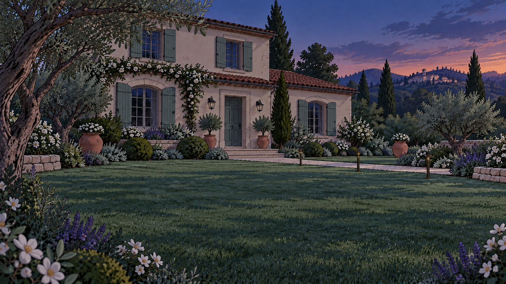

Una giornata smart · Clip 05
La luce, al momento giusto.
La casa conosce l’ora del crepuscolo e accende automaticamente le luci dell’ingresso e del giardino.


La sera arriva19:44La casa conosce il suo orario.
Crepuscolo previsto · 19:45
LEILei · al telefonoÈ già scesa la luce.
Una giornata smartLa casa conosce l’ora del crepuscolo.
00:0000:15
05 / 08 · Luci al crepuscolo